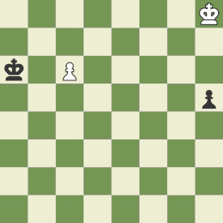

El final de una partida de ajedrez es la fase más importante de la partida, pues mal jugado puede hacer que por mucha ventaja que tengamos perdamos la partida
Richard Reti fue uno de los grandes jugadores que aportaron gran valor para jugar bien los finales. La posición de Reti o maniobra Reti es una de las más famosas, pero ¿ cómo se soluciona? ( escribe los movimientos que se juegan)
1. 2. 3. 4. 5.